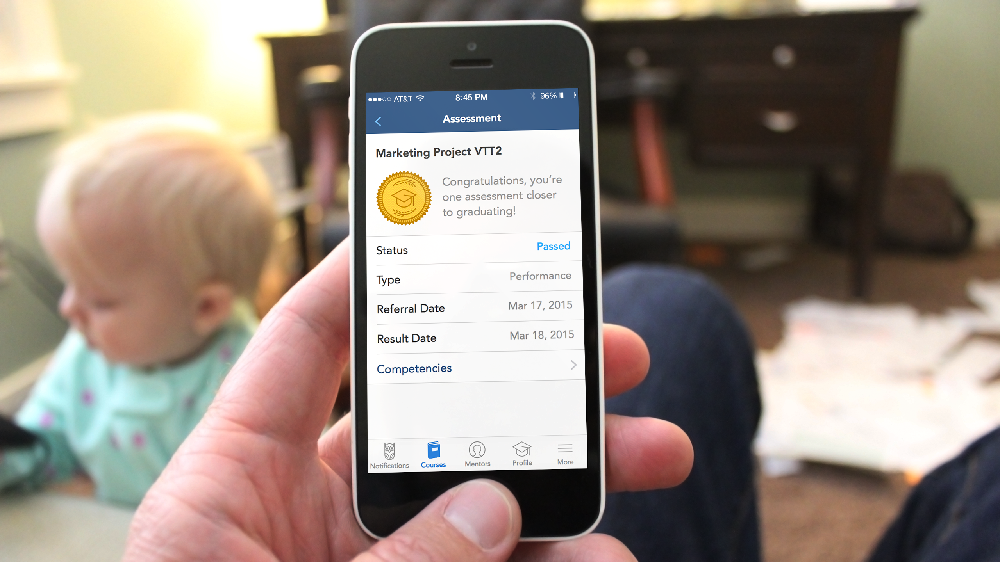
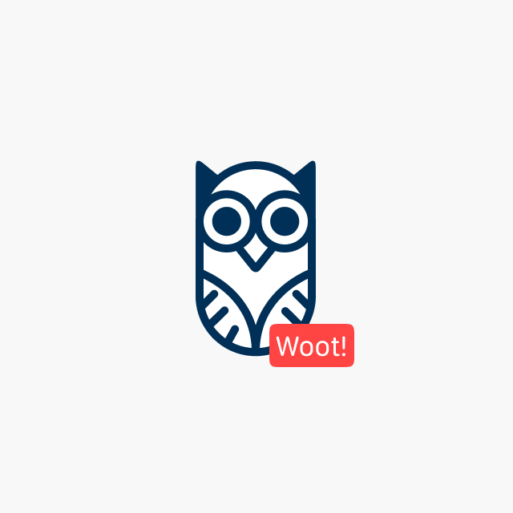
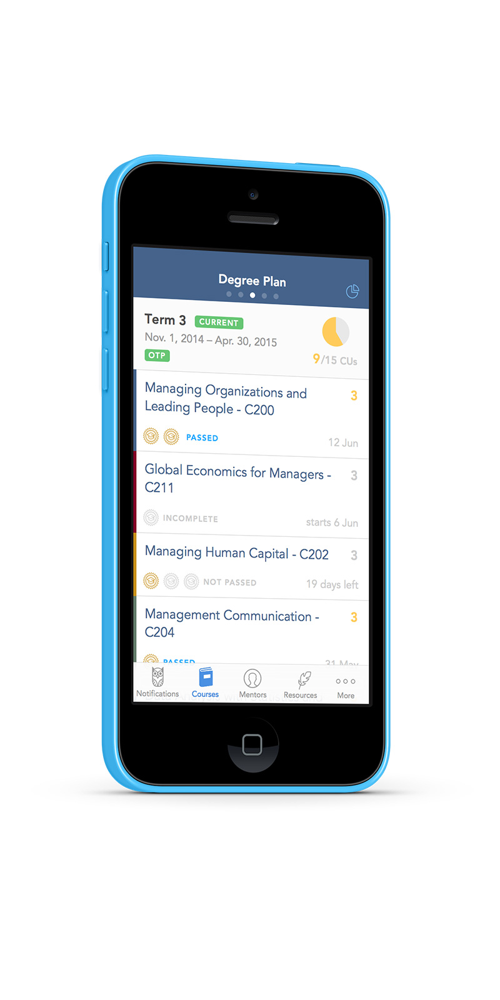
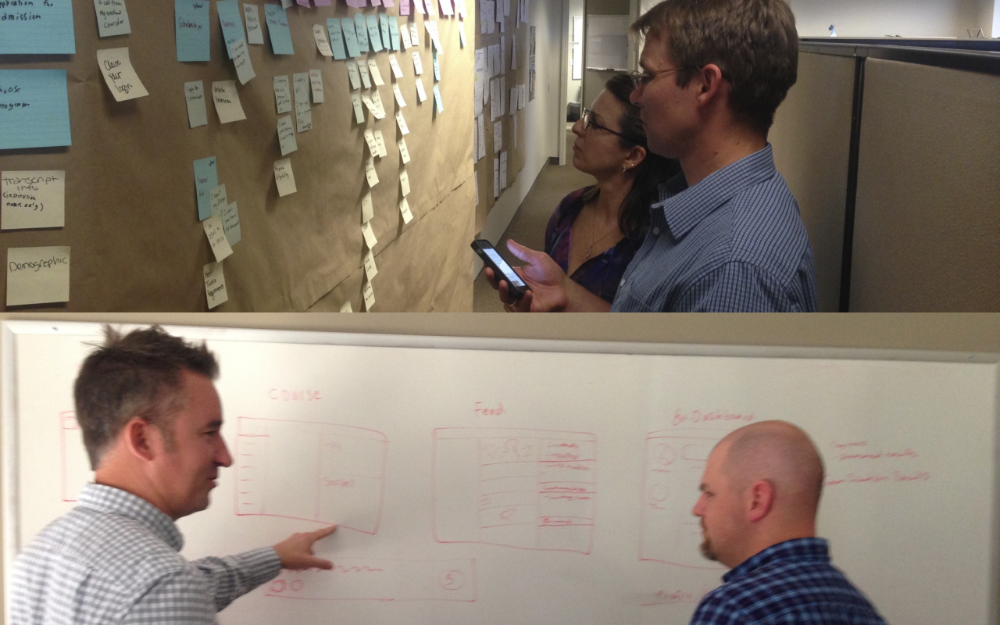
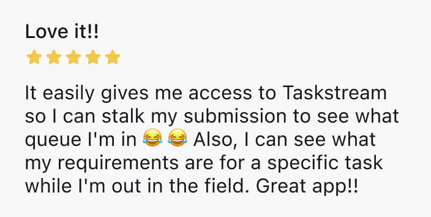

Role & Responsibilities
- Sr. UX Designer & Interim Product Manager
- Defined the vision and strategy for the WGU’s mobile app first release, balancing academic and business objectives with student needs.
- Conducted research to deeply understand student pain points and user needs.
- Created interactive prototypes and validated concepts with users.
- Facilitated story mapping sessions with engineers and collaborated closely with designers.
- Worked directly with executive and academic stakeholders to ensure alignment and gain buy-in.
Use Case
Mobile Learning Experience for WGU Students
WGU students, primarily working adults with families, needed greater flexibility to study, access course materials, and track their progress outside of a desktop computer. Since their programs are designed for self-paced learning, providing students with mobile access to curriculum, assignments, progress tracking, and mentor support was crucial to their educational success.
Desired Outcome
Deliver a mobile app that empowers WGU students to access their educational resources anytime, anywhere, on any device. In my role as Sr. UX Designer and interim Product Manager, I led the direction and vision for the app, partnering with stakeholders to establish a roadmap for the initial release and crafting a holistic, cross-functional approach to support students in achieving their educational goals.



Design Process
This project required deep collaboration across teams and with executive and academic leaders, each bringing unique perspectives and goals.
- Research & Stakeholder Engagement: Conducted interviews with WGU students to understand the demands of balancing work, family, and study. These insights highlighted the importance of mobile flexibility and influenced the roadmap and app features.
- Prototyping & Cross-Functional Collaboration: I worked closely with engineers and other designers, mapping user stories and developing prototypes to iterate on design concepts. This inclusive process helped us develop a seamless, holistic mobile experience.
- Vision & Team Scaling: Initially acting as both Product Manager and Designer, I set the app’s strategic direction and aligned the team around a shared vision. As the project grew, I transitioned to a design-focused role as a dedicated Product Manager and engineering teams were added, ensuring the scalability of the project across iOS and Android.

Outcome
Our mobile app empowered students to engage with their studies on their own schedules and from any location. This solution supported WGU’s mission to provide accessible, flexible education for working adults and set the foundation for ongoing development and enhancements as the team expanded.
